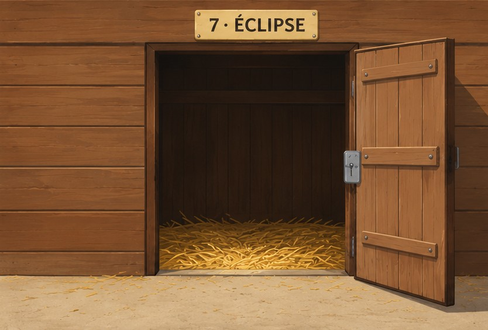
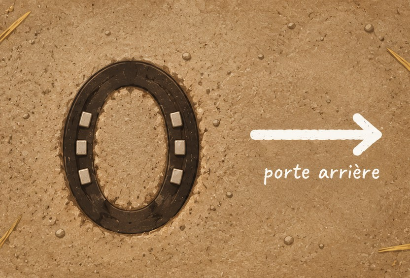
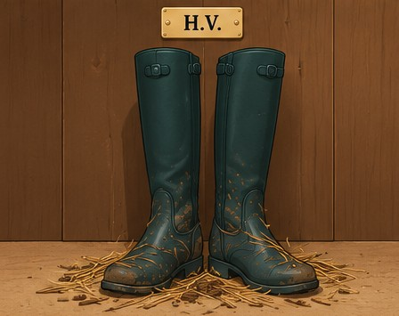
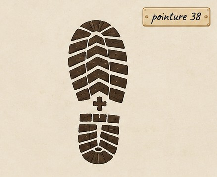
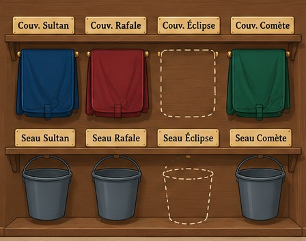
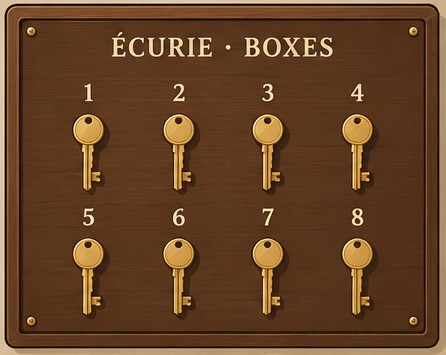
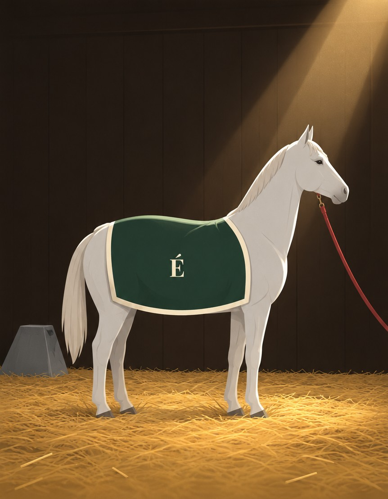

Ce document contient tout ce qui se glisse dans les 8 enveloppes, ainsi que leurs étiquettes. Les joueurs ne doivent pas le voir avant la partie.
Imprimez en couleur sur papier ordinaire (120 g, c'est mieux). Les étiquettes peuvent aller sur papier adhésif.
Découpez les éléments en suivant les pointillés ✂, et les photos au bord du cadre blanc.
Collez l'étiquette « recto » sur le devant de chaque enveloppe kraft, et l'étiquette « contenu » au dos.
Glissez dans chaque enveloppe ses documents et ses cartes Objet (imprimées avec les cartes).
Le tiroir secret : glissez-y la carte O3 Contrat d'assurance (menu du monde,
« Tiroir secret : l'ouvrir », puis repoussez-le au fond et validez). Le code du bureau l'ouvrira. Sans tiroir,
la carte O3 va dans l'enveloppe E3.
Le fer à cheval de la forge : un petit fer décoratif (6 à 8 cm), avec un aimant néodyme (Ø 10 × 3 mm) collé
dessous. Posez-le près du pupitre avant la partie, sans rien dire : le pupitre dira quand s'en servir.
Enveloppe
Lieu
Documents de ce PDF
Cartes Objet
E1
Écurie
Page du carnet de santé chiffrée · 2 photos (box 7, empreinte)
O1 Carnet de santé
E2
Sellerie
3 photos (bottes, semelle, râtelier)
O2 Bottes boueuses
E3
Bureau
Photo du tableau des clés · ticket de l'enregistreur · avenant d'assurance
O4 Clé du box 7 (O3 Contrat : dans le tiroir secret, sinon ici)
E4
Vieille Grange
Photo d'Éclipse
O5 Couverture · O6 Seau · O7 Lampe
E5
Manège
Reconnaissance de dette · ticket du casino
O8 Reconnaissance de dette
E6
Carrière
Le mot de Victoire
O9 Flot bleu
E7
Pré du Bas
Bon de livraison · photo des traces de pneus
O10 Bon de livraison
E8
Sentier des bois
Le carnet du sentier (3 pages)
—
Étiquettes · recto des enveloppes
E1
L'Écurie
Ne pas ouvrir avant que le pupitre le demande
E2
La Sellerie
Ne pas ouvrir avant que le pupitre le demande
E3
Le Bureau
Ne pas ouvrir avant que le pupitre le demande
E4
La Vieille Grange
Ne pas ouvrir avant que le pupitre le demande
E5
Le Manège
Ne pas ouvrir avant que le pupitre le demande
E6
La Carrière
Ne pas ouvrir avant que le pupitre le demande
E7
Le Pré du Bas
Ne pas ouvrir avant que le pupitre le demande
E8
Le Sentier des bois
Ne pas ouvrir avant que le pupitre le demande
Étiquettes · dos des enveloppes (contenu, pour le rangement)
E1 · Écurie
Carte O1 · Carnet de santé
Page du carnet chiffrée
Photo : le box 7
Photo : l'empreinte dans l'allée
E2 · Sellerie
Carte O2 · Bottes boueuses
Photo : les bottes sur le crochet H.V.
Photo : la semelle
Photo : le râtelier
E3 · Bureau
Carte O3 · Contrat d'assurance (si pas de tiroir secret)
Carte O4 · Clé du box 7
Photo : le tableau des clés
Ticket de l'enregistreur
Avenant d'assurance
E4 · Vieille Grange
Carte O5 · Couverture
Carte O6 · Seau de granulés
Carte O7 · Lampe torche
Photo : Éclipse
E5 · Manège
Carte O8 · Reconnaissance de dette
Reconnaissance de dette (papier)
Ticket du casino
E6 · Carrière
Carte O9 · Flot bleu
Le mot de Victoire
E7 · Pré du Bas
Carte O10 · Bon de livraison
Bon de livraison (papier)
Photo : les traces de pneus
E8 · Sentier des bois
Le carnet du sentier (3 pages)
Enveloppe E1 · Écurie
Carnet de santé · ÉCLIPSE · jument grise, 9 ans · Dr C. Morel
JOGMTUYZOI JA NAOZ UIZUHXK
ZKTJOTOZK GTZKXOKAX MGAINK
GXXKZ JK ZUAZK IUSVKZOZOUT
YOD SUOY SOTOSAS
SSK B KDOMK WAK VKXYUTTK
TK YUOZ VXKBKTA VGY SKSK
R GYYAXGTIK
Dr C. M.

Box 7 : la porte est ouverte… mais la serrure est intacte.

Dans l'allée, une empreinte bizarre file vers la porte arrière.
Enveloppe E2 · Sellerie

Des bottes pleines de boue fraîche… et d'aiguilles de pin.

La semelle de la botte droite.

Au râtelier, deux places sont vides : la couverture et le seau d'Éclipse.
Enveloppe E3 · Bureau

Le tableau des clés : toutes sont à leur place… même la n° 7.
VIDEO-SURVEILLANCE
HARAS DES TROIS FERS
CAM 1 - ECURIE (ENTREE PRINC.)
-----------------------------
JOURNAL DES EVENEMENTS
-----------------------------
22:04 MOUVEMENT
02:31 MOUVEMENT
02:48 MOUVEMENT
03:12 COUPURE ALIMENTATION
04:05 REPRISE ALIMENTATION
06:02 MOUVEMENT
-----------------------------
COUPURE 03:12 -> 04:05
DUREE : 53 MIN
-----------------------------
** FIN DU JOURNAL **
Mutuelle Équine de Normandie
Assurance des chevaux de sport et d'élevage · Deauville
Contrat n° 48-221-EQ Avenant n° 3
Avenant au contrat d'assurance
Assurée : Mme Hélène Vasseur, Haras des Trois Fers Cheval : ÉCLIPSE, jument grise, 9 ans, n° SIRE 250001-47XK
À la demande de l'assurée, la valeur assurée du cheval désigné ci-dessus est portée de 300 000 € à 450 000 €, à compter de la signature du présent avenant.
L'assurée déclare que le cheval est en parfaite santé et qu'aucun examen vétérinaire en cours ne laisse présager de diminution de sa valeur.
Fait à Deauville, le 11 octobreSignature de l'assurée H. Vasseur
Enveloppe E4 · Vieille Grange

Éclipse est là, saine et sauve, sur de la paille fraîche !
Enveloppe E5 · Manège
Reconnaissance de dette
Je soussigné Antoine Vasseur reconnais devoir à M. Z. la somme de vingt mille euros (20 000 €), que je m'engage à rembourser avant la fin de l'année.
Fait à Deauville, le 3 septembre. A. Vasseur
GRAND CASINO
DE LA COTE FLEURIE
-----------------------------
CAISSE 4
DATE : SAMEDI
HEURE : 01:12
-----------------------------
CHANGE JETONS -> ESPECES
MONTANT : 35,00 EUR
-----------------------------
MERCI DE VOTRE VISITE
JOUER COMPORTE DES RISQUES
Enveloppes E6 · Carrière et E7 · Pré du Bas
E6 · Carrière
L'an prochain, il sera bleu pour moi. V.
E7 · Pré du Bas
Transports Équins Delorme
Achat · vente · transport de chevaux · Lisieux
Bon de livraison n° 2210
Destinataire
Haras des Ormes, route départementale
Cheval livré
Hongre bai, 6 ans, « Galopin »
Heure de livraison
4 h 45
Itinéraire
Lisieux → route départementale → Les Ormes
Réception
P. Auger · tampon du Haras des Ormes
Des traces de camion… qui restent bien sur le goudron.
Enveloppe E8 · Sentier des bois · page 1/3
Carnet du sentier · Croisement 1
La clairière vue du ciel, et ses quatre pistes. Traces relevées au pied de chaque balise ; la pince (l'avant) des empreintes pointe vers le haut de la page.
↑ Balise rouge
← Balise jaune
→ Balise bleue
↓ Balise verte
Vous êtes ici
✋
Pour prendre une piste, passez la main au-dessus de l'œil du pupitre, dans sa direction. Ou appuyez sur le bouton de sa couleur.
Enveloppe E8 · Sentier des bois · page 2/3
Carnet du sentier · Croisement 2
La clairière vue du ciel, et ses quatre pistes. Traces relevées au pied de chaque balise ; la pince (l'avant) des empreintes pointe vers le haut de la page.
↑ Balise bleue
← Balise jaune
→ Balise verte
↓ Balise rouge
Vous êtes ici
✋
Pour prendre une piste, passez la main au-dessus de l'œil du pupitre, dans sa direction. Ou appuyez sur le bouton de sa couleur.
Enveloppe E8 · Sentier des bois · page 3/3
Carnet du sentier · Croisement 3
La clairière vue du ciel, et ses quatre pistes. Traces relevées au pied de chaque balise ; la pince (l'avant) des empreintes pointe vers le haut de la page.
↑ Balise rouge
← Balise bleue
→ Balise verte
↓ Balise jaune
Vous êtes ici
✋
Pour prendre une piste, passez la main au-dessus de l'œil du pupitre, dans sa direction. Ou appuyez sur le bouton de sa couleur.